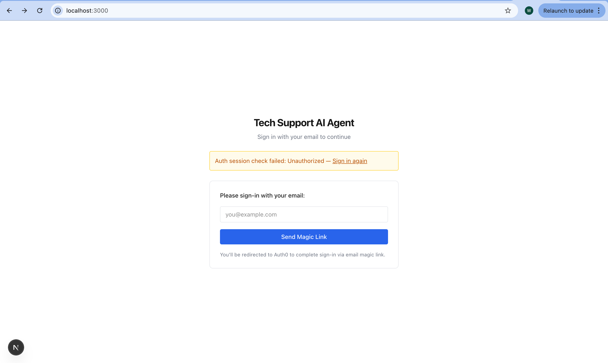
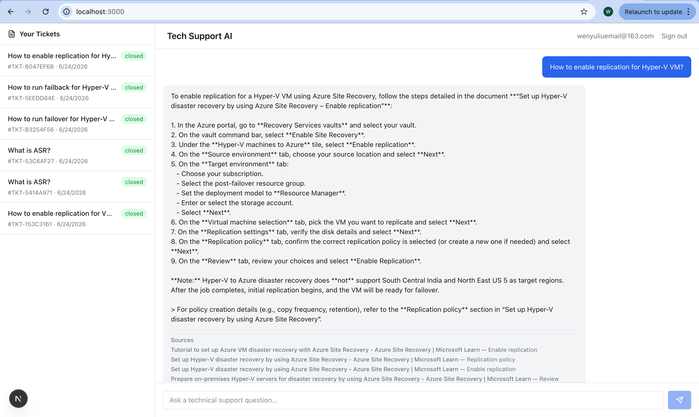

01 / Overview
Faster answers, grounded in documentation.
Technical support for complex cloud services like Azure Site Recovery (ASR) and Azure Migrate has long been a bottleneck. Operation engineers, solution architects, and first-time product trial users open tickets with questions ranging from "How do I safely delete a Recovery Services vault after failover?" to error messages during test failover or high-level migration architecture guidance. Today those requests land in a shared human queue, first response times stretch, the same issues get solved repeatedly by different engineers, and each new agent lacks the user's historical context.
The Tech Support AI Agent is built to change that. It delivers grounded, cited answers in seconds for fundamental questions and standard operational procedures, while seamlessly escalating the harder cases and preserving full account history.
02 / Market Research
The persistent friction in enterprise cloud support.
Azure Site Recovery and Azure Migrate sit at the center of business-continuity and cloud-migration workloads. The users who interact with them expect fast, accurate guidance, yet the current support model creates four structural pain points:
- 01Long first-response times - Every ticket routes into a human backend pool.
- 02High request variation - Questions span product fundamentals, step-by-step procedures, error diagnostics, and architectural design.
- 03Repeated work - Multiple engineers independently research and answer the same recurring issues.
- 04Lost context - Successive tickets for the same account are handled by different people who lack prior resolutions and preferences.
These frictions directly affect customer satisfaction, operational cost, and the speed at which customers adopt and expand Azure services. An AI agent that reliably answers the high-volume, well-documented questions can cut first-response time dramatically, raise resolution rates without human intervention, and free senior engineers for the complex architectural and multi-product cases that remain out of scope for the initial release.
03 / Product Strategy
Mission, scope, and measurable value.
Deliver faster first-time responses, personalized context from past tickets, and higher overall support efficiency for Azure Site Recovery and Azure Migrate users, while keeping answers strictly grounded in official documentation and escalating when confidence is insufficient.
Target Users & Scenarios
- 01Product trial users seeking cost-safe cleanup steps after failover.
- 02Operations engineers troubleshooting test-failover failures.
- 03Solution architects designing on-prem VMware-to-Azure migration strategies for foundational guidance only.
Product Scope
- 01Simple fundamental questions about ASR and Azure Migrate.
- 02Standard operational procedures drawn from product manuals and internal handbooks.
- 03Diagnosis and remediation of specific error codes after procedures have been attempted.
- 04Functionality improvements that span multiple Azure products.
- 05Full architectural design optimizing performance, cost, and stability across complex environments.
Success Metrics
Primary KPIs track resolution rate, CSAT, first-response time, average handle time, and escalation rate, with clear launch and rollback criteria based on those core metrics.
04 / Technical Foundation
RAG pipeline with citation discipline.
The system combines a real-time retrieval path for grounded answers with an offline ingestion path for knowledge-base documents and CRM ticket history. Knowledge-base documents are the single source of truth; ticket context personalizes answers but never overrides current documentation.
Technical Stack


Online Query Path
- 01User authenticates; session token supplies account_id.
- 02Frontend loads the account's ticket list.
- 03User submits a question, optionally referencing a prior ticket.
- 04Backend retrieves relevant historical tickets from PostgreSQL, filtered by account_id.
- 05Query is embedded and sent to Pinecone; top-k chunks return with metadata filters.
- 06Prompt is assembled from system instructions, retrieved KB chunks, optional ticket context, and the user query.
- 07LLM streams tokens back via Server-Sent Events with citations and ticket-context events interleaved.
- 08Frontend displays the grounded answer with sources.
Offline Ingestion & Retrieval Policy
Knowledge-base documents are chunked at 500 tokens with 50-token overlap, embedded, and upserted into Pinecone with rich metadata such as document_id, source_path, chunk_index, title, section_heading, and ingestion_version. A scheduled ETL job syncs new and updated tickets from the CRM into PostgreSQL hourly.
Retrieval normalizes the query, takes the top-8 Pinecone chunks, adds up to 3 relevant tickets, deduplicates, optionally re-ranks, and drops low-confidence results. If no KB chunk passes the relevance threshold, the agent returns a short, honest fallback and suggests escalation or rephrasing. Every non-trivial factual claim must cite at least one KB chunk.
Evaluation Framework
- 01Retrieval quality - Recall@k, Precision@k, Mean Reciprocal Rank, and citation-source match rate.
- 02Answer quality - Groundedness, citation correctness, completeness, hallucination rate, and correct refusal when grounding is insufficient.
- 03Operational performance - p50/p95/p99 latency, embedding and Pinecone query latency, token usage, empty-result rate, and streaming completion rate.
Any change to chunking, embeddings, prompting, or retrieval logic must pass the benchmark set before release. Regression on citation correctness or groundedness is a hard blocker.
05 / Looking Ahead
Faster resolution, lower cost, happier users.
The initial release focuses on the highest-volume, best-documented questions, delivering measurable gains in response time and satisfaction within three months. Subsequent iterations can expand scope to error diagnosis and richer architectural guidance once the grounding and escalation patterns prove reliable.
By combining a tightly scoped RAG system, account-aware ticket context, strict citation discipline, and continuous evaluation, the Tech Support AI Agent turns routine Azure ASR and Migrate support from a cost center into a scalable, high-quality experience.